MyPDFViewer 프로그램 설명서
PDF를 읽고, 형광펜을 칠해 PDF에 저장하고, 글자와 그림을 꺼내 쓰는 뷰어 — Windows · macOS · Linux · 웹 브라우저
1. 소개
MyPDFViewer는 PDF를 빠르게 열어 읽고, 필요한 부분에 형광펜을 칠해 PDF 파일 안에 저장하며, 문서 속 텍스트와 그림을 손쉽게 복사하는 프로그램입니다. 열어 본 문서는 갤러리에 저절로 모이고, 아끼는 문서는 서재에 꽂아 두고 책장처럼 크게 볼 수 있습니다.
- 문서를 열면 항상 화면 맞춤으로 쪽 전체가 보입니다. 툴바 버튼으로 원본 · 폭 · 높이 맞춤을 바로 바꿉니다.
- 형광펜은 PDF 표준 주석으로 저장되어 다른 PDF 프로그램에서도 그대로 보입니다.
- 프린터 · 매수 · 용지 방향을 고르고 [인쇄] 를 누르면 시스템 인쇄 창 없이 바로 인쇄됩니다.
- 시작 화면의 움직이는 3D 배경 21가지 가운데 하나를 고르고, 투명도와 속도를 조절할 수 있습니다.
2. 시작 화면
프로그램을 켜면 시작 화면이 나옵니다. 툴바 맨 왼쪽의 홈 버튼으로 언제든 다시 열 수 있습니다. 시작 화면은 좌측 패널까지 덮어 화면 전체를 씁니다.
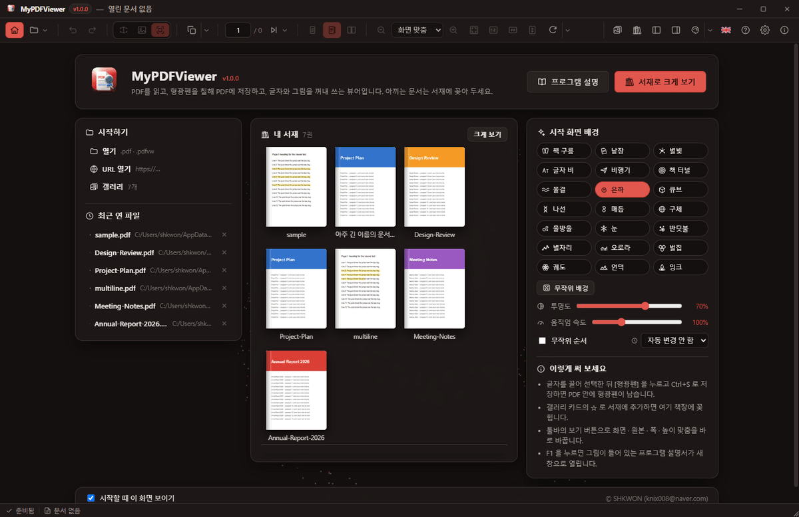
- 위쪽 카드 — 프로그램 이름과 버전, [프로그램 설명](이 설명서를 새 창으로 엽니다), [서재로 크게 보기].
- 시작하기 — 열기, URL 열기, 갤러리. 아래에는 최근 연 파일이 있고 각 줄의 ✕ 로 기록에서 지웁니다.
- 내 서재 — 서재에 넣은 문서가 책장에 꽂혀 보입니다. 책을 누르면 그 문서가 열립니다.
- 시작 화면 배경 — 움직이는 3D 배경을 고르고 조절합니다(아래).
- 맨 아래 시작할 때 이 화면 보이기 를 끄면 다음부터는 빈 화면으로 시작합니다.
시작 화면 배경
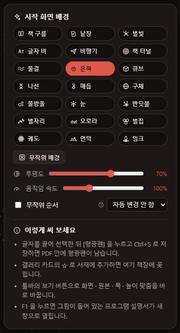
책 구름 · 낱장 · 별빛 · 글자 비 · 비행기 · 책 터널 · 물결 · 은하 · 큐브 · 나선 · 매듭 · 구체 · 물방울 · 눈 · 반딧불 · 별자리 · 오로라 · 벌집 · 궤도 · 언덕 · 잉크 — 읽기와 책, 종이를 주제로 한 21가지 3D 장면입니다. 버튼에 마우스를 올리면 어떤 장면인지 설명이 나옵니다.
- 무작위 배경 — 다른 배경을 아무거나 고릅니다.
- 투명도 — 배경이 얼마나 진하게 보일지 (10 % ~ 100 %).
- 움직임 속도 — 10 % ~ 300 %.
- 자동 변경 — 15초 ~ 5분마다 배경을 저절로 바꿉니다. 무작위 순서 를 켜면 순서 없이 바뀝니다.
같은 설정은 설정 → 시작 화면 에도 있습니다. 배경 색은 지금 테마를 따릅니다.
3. 문서 열기
- 열기 (Ctrl+O) — PDF 또는 작업 파일(
.pdfvw)을 고릅니다. 여러 개를 한꺼번에 고르면 탭으로 열립니다. - URL 열기 — 인터넷 주소의 PDF를 내려받아 엽니다.
- 끌어 놓기 — 탐색기에서 PDF를 창으로 끌어 오면 열립니다.
- 폴더 패널 — 마지막으로 파일을 연 폴더에서 시작하고, 그 폴더가 없으면 홈 폴더를 보여 줍니다.
- 설치 후에는 PDF와
.pdfvw를 두 번 눌러 바로 열 수 있습니다.
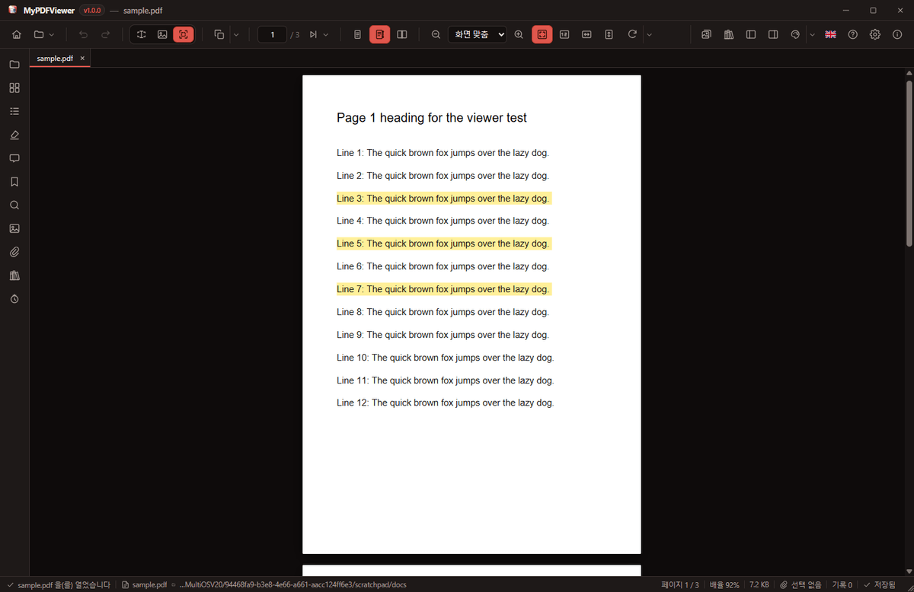
4. 보기 맞춤과 확대
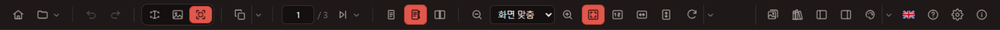
| 버튼 | 보이는 모양 |
|---|---|
| 화면 맞춤 | 쪽 전체가 창 안에 들어옵니다. 문서를 열 때 항상 이 모양입니다. |
| 원본 크기 | 100 % — PDF에 적힌 크기 그대로 (Ctrl+0). |
| 폭 맞춤 | 쪽의 폭을 창 폭에 맞춥니다. |
| 높이 맞춤 | 쪽의 높이를 창 높이에 맞춥니다. |
확대 · 축소는 툴바 버튼, Ctrl++ / -, 또는 Ctrl+마우스 휠로 합니다. 화면보다 크게 확대된 페이지는 글자나 그림이 아닌 곳을 마우스 왼쪽 버튼으로 누른 채 끌면 손 모양 포인터로 옮길 수 있습니다. 읽기 모드에서는 글자 위에서도 끌어 옮깁니다. 페이지 배치는 한 쪽 · 연속 · 두 쪽 보기 가운데 고릅니다.
5. 텍스트 · 그림 복사
- 텍스트 도구 (Ctrl+1) — 끌어서 선택하고 Ctrl+C.
- 이미지 도구 (Ctrl+2) — 그림을 눌러 고른 뒤 오른쪽 클릭으로 원본 해상도로 복사 · 저장.
- 영역 도구 (Ctrl+3) — 사각형으로 끌어 그 부분을 그림으로 잘라냅니다 (PNG · JPEG · WebP · GIF · BMP).
- 읽기 모드 (Ctrl+4) — 아무것도 선택하지 않고 보기만 합니다. 확대된 페이지는 어디서든 끌어 옮깁니다.
6. 형광펜
- 텍스트 도구로 칠할 글자를 끌어 선택합니다. 여러 줄도 됩니다.
- 복사 버튼 옆 ▾ 메뉴나 오른쪽 클릭 메뉴에서 형광펜 을 누릅니다. 선택한 부분 전체가 형광펜 하나로 칠해집니다.
- Ctrl+S 로 저장하면 PDF 안에 표준 형광펜 주석으로 들어갑니다.
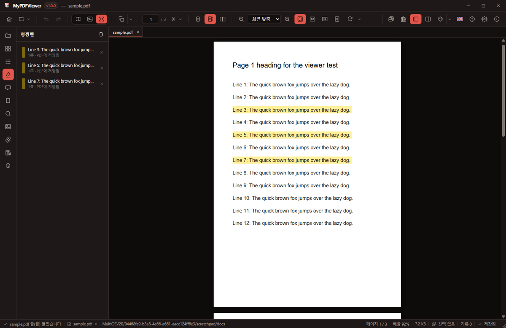
- 형광펜 탭 에 문서의 모든 형광펜이 나옵니다. "PDF에 저장됨" 과 "저장 전" 이 구분되어 보입니다.
- ✕ 를 누르면 하나, 제목 옆 휴지통을 누르면 모두 지워집니다. 확인 창 없이 바로 지워지고, 저장되어 있던 형광펜도 지울 수 있습니다 (Ctrl+S 로 파일에 반영).
7. 저장
- PDF로 저장 (Ctrl+S) — 형광펜 · 주석 · 책갈피 · 첨부를 열린 PDF 파일에 바로 저장합니다.
- PDF 다른 이름으로 저장 — 원본은 두고 새 파일로 저장합니다. 기본 이름은
문서이름-annotated.pdf. - 작업 파일로 저장 —
.pdfvw에 원본 경로, 보던 쪽, 형광펜 · 책갈피 · 클립을 담습니다. - 저장하지 않은 변경이 있으면 창이나 탭을 닫기 전에 저장할지 묻습니다.
8. 갤러리
툴바의 갤러리 버튼으로 엽니다. 열어 본 PDF가 저절로 등록되어 첫 쪽 그림과 이름으로 모입니다.
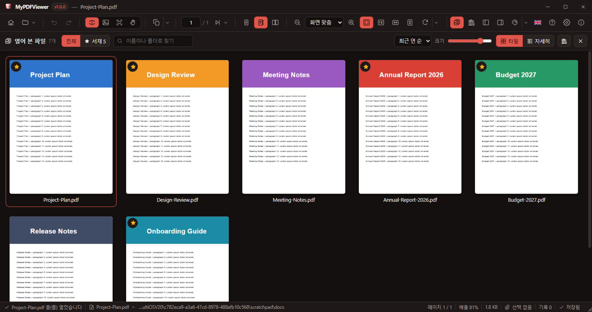
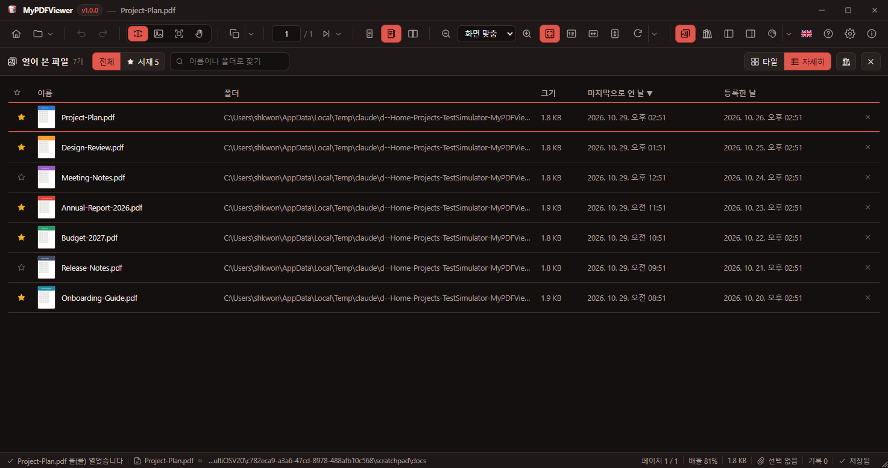
- [파일 추가] — 열지 않고 갤러리에 등록합니다. 페이지 오른쪽 클릭의 갤러리에 등록 도 같은 일을 합니다.
- ✕ 로 등록을 해제해도 파일은 지워지지 않습니다.
- 이름이나 폴더로 찾기, 전체 / 서재 보기, 최근 연 순 · 이름 · 추가한 순 · 크기 정렬을 지원합니다.
9. 서재
아끼는 문서를 서재에 추가(갤러리 카드의 ☆, 오른쪽 클릭 메뉴)하면 툴바의 서재 버튼으로 책장처럼 크게 볼 수 있습니다. 서재는 화면 전체를 씁니다. 툴바의 사이드바 · 문서 정보 버튼(F9 · F8)을 누르면 좌우 패널이 서재 옆에 열립니다.
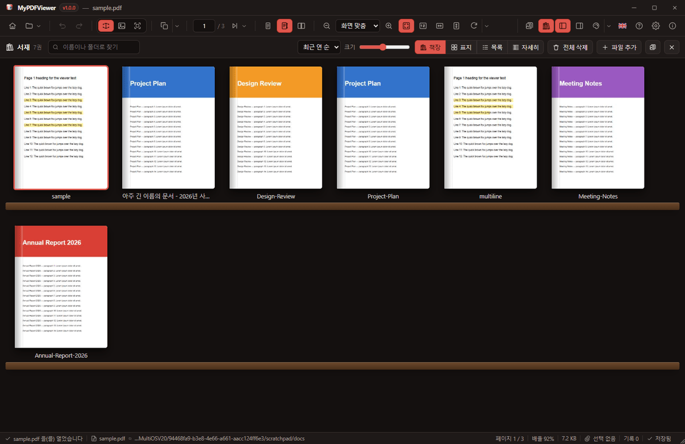
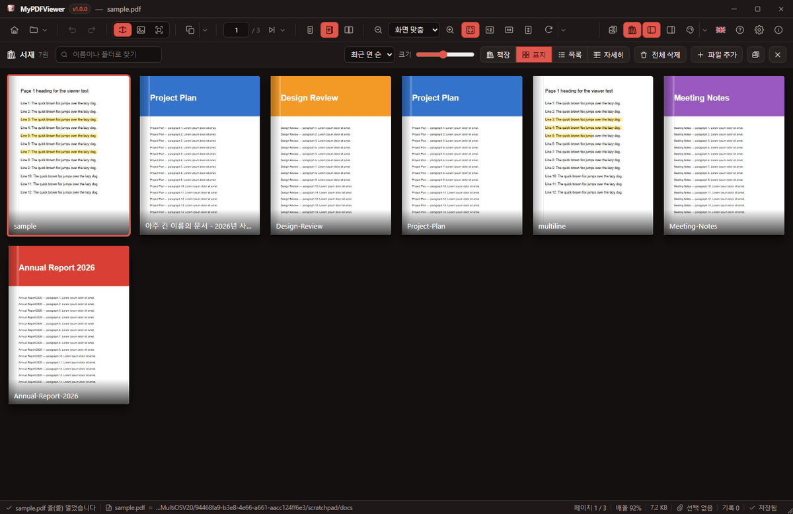
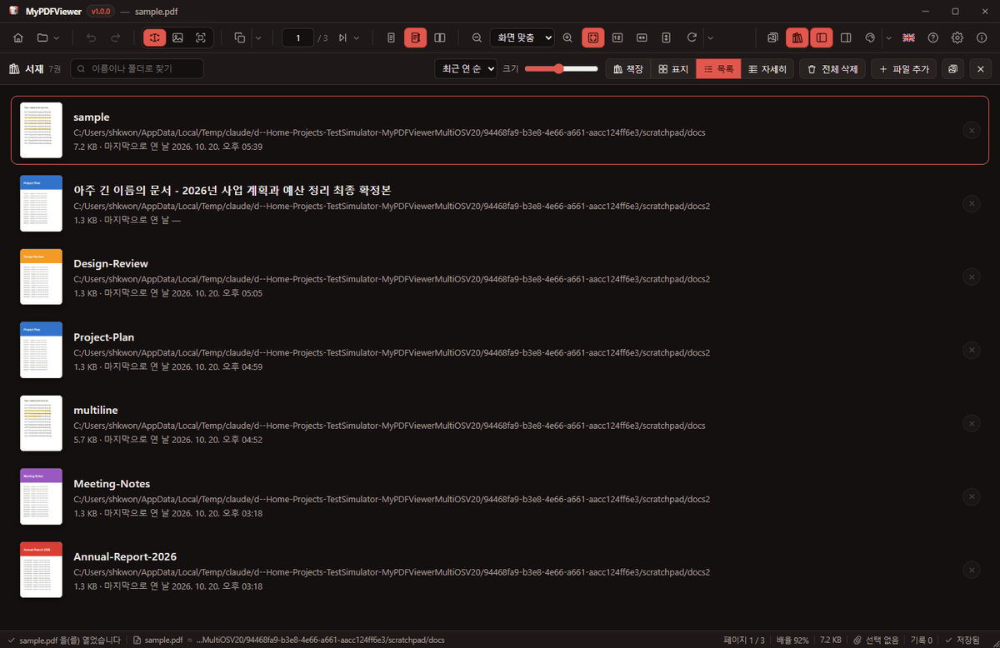
- 책장 · 표지 · 목록 · 자세히 네 가지 보기 — 크기 슬라이더 하나가 모든 보기의 크기를 함께 바꿉니다 (아주 작게도 볼 수 있습니다).
- 책 제목은 한 줄로 줄여(…) 보여 주어 책들이 수평으로 고르게 섭니다.
- 책마다 ✕ 로 서재에서 빼고, 전체 삭제 로 서재를 비웁니다. 파일과 갤러리 카드는 그대로입니다.
10. 좌측 패널
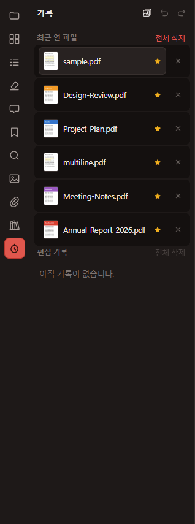
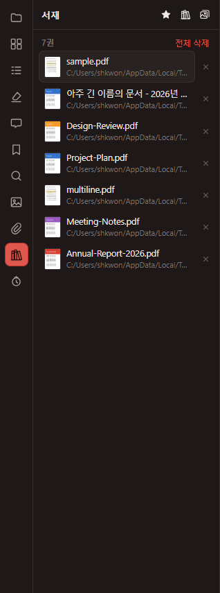
| 탭 | 내용 |
|---|---|
| 폴더 | 드라이브와 폴더 트리, PDF 파일 |
| 축소판 · 목차 | 쪽 그림과 접히는 목차 |
| 형광펜 | 형광펜 목록, 이동 · 개별 삭제 · 모두 지우기 |
| 주석 · 책갈피 · 찾기 · 이미지 · 첨부 | 각 항목 목록과 이동 |
| 서재 | 서재에 넣은 문서, 개별 · 전체 삭제, 서재로 크게 보기 |
| 기록 | 최근 연 파일과 편집 기록, 개별 · 전체 삭제 |
11. 오른쪽 클릭 메뉴
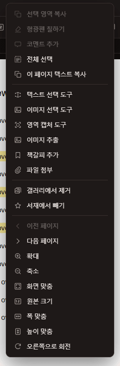
페이지, 좌측 패널의 모든 항목, 갤러리와 서재의 카드마다 아이콘이 붙은 메뉴가 있습니다.
- 페이지 — 복사, 형광펜, 코멘트, 도구, 이미지 추출, 책갈피, 첨부, 갤러리에 등록 / 제거, 서재에 추가, 쪽 이동, 확대, 보기 맞춤, 회전
- 파일 항목 — 열기, 서재에 추가 / 빼기, 폴더에서 보기, 경로 복사
- 형광펜 · 책갈피 · 주석 — 이동, 글자 복사, 지우기
12. 인쇄
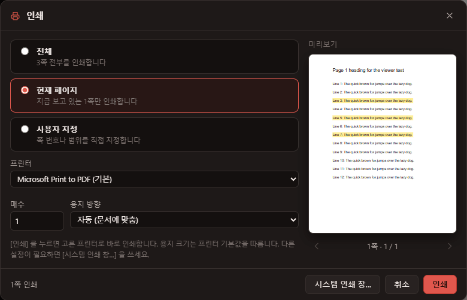
- 전체 · 현재 페이지 · 사용자 지정(
1-5, 8, 11-13) 가운데 범위를 고릅니다. - 프린터 · 매수 · 용지 방향(자동 · 세로 · 가로)을 고르고 [인쇄] 를 누르면 바로 인쇄됩니다. 마지막에 쓴 프린터와 방향은 기억됩니다.
- 용지 · 양면 같은 세부 설정이 필요하면 [시스템 인쇄 창…] 을 누르세요.
- "Microsoft Print to PDF" 처럼 파일 이름을 묻는 프린터에서 그 창을 취소하면 인쇄도 취소됩니다.
13. 설정
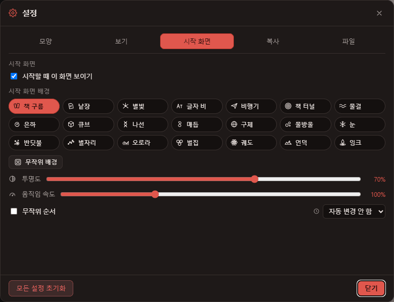
- 모양 — 테마 40가지와 사용자 정의 테마, 글꼴과 크기.
- 보기 — 기본 확대 방식, 페이지 배치, 페이지 넘김 효과.
- 시작 화면 — 위 그림과 같습니다.
- 복사 — 선택하면 바로 복사, 그림 저장 형식과 품질.
- 파일 — 기본 열기 폴더, 최근 폴더 지우기, 설정 파일 위치.
14. 단축키
| 키 | 동작 | 키 | 동작 |
|---|---|---|---|
| Ctrl+O | 열기 | Ctrl+S | 열린 PDF에 저장 |
| Ctrl+P | 인쇄 | F1 | 이 설명서 열기 |
| Ctrl+W | 탭 닫기 | Ctrl+Tab | 다음 탭 |
| Ctrl+C | 선택 복사 | Ctrl+A | 페이지 전체 선택 |
| Ctrl+1 / 2 / 3 / 4 | 텍스트 / 이미지 / 영역 도구 / 읽기 모드 | Ctrl+Z / Y | 실행 취소 / 다시 실행 |
| Ctrl+F | 찾기 | F9 | 사이드바 |
| Ctrl++ / - | 확대 / 축소 | Ctrl+0 | 원본 크기 |
| PageUp / PageDown | 이전 · 다음 쪽 | Esc | 갤러리 · 서재 닫기 |
15. 설치와 데이터
- Windows 설치 파일은
npm run build:win으로 만듭니다 (macOSbuild:mac, Linuxbuild:linux). - 설치할 때 바로 가기와 PDF 기본 뷰어 설정을 고를 수 있습니다. 예전 Electron 판은 먼저 지우고, 남은 설정을 지울지 묻습니다.
- 설정 · 최근 파일 · 갤러리 · 서재는
%APPDATA%\MyPDFViewer\settings.json에 저장됩니다. 갤러리 그림은 앱 데이터 안에 따로 보관됩니다.